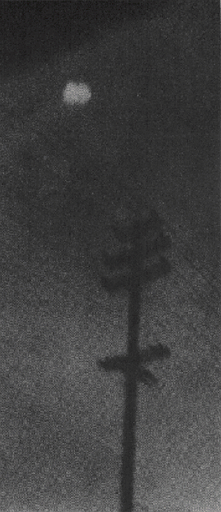
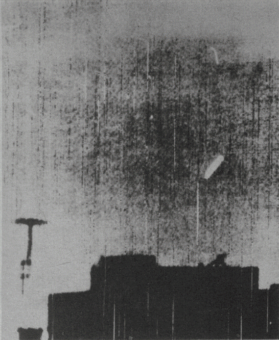

Le 23 Août 1957, Ballassar Bottos photographie cet ovni à Camden (New Jersey). Le Projet Blue Book, l'équipe
d'enquête officiel de l'Air Force, a examiné le négatif, et décidé qu'ils s'agissait d'un ballon [Project Blue Book - USAF]

Des observateurs ont découvert que là où il y a une soucoupe, il y a généralement une ligne électrique pas loin
derrière. Tirent-ils leur puissance de ces lignes ? Où les soucoupes ont-elles été, comme certains le disent, la
cause de pannes d'électricité de régions ?
Michael Savage, fils de 15 ans d'un chirurgien de Californie, a saisi cet objet près de lignes électriques à San
Bernadino. Il a essayé d'obtenir un 2nd cliché mais dans sa hâte over-cranked l'appareil et tiré un négatif vide
[Wide World]
Notez les lignes électriques sous l'ovni brillant de le ciel près du Centre de Développement Aérien
d'Alamogordo (Nouveau Mexique). Pris le 18 Octobre 1957 par un employé gouvernemental, l'objet fut évalué
comme un nuage lenticulaire par l'Air Force. L'ovni à survolé 15 mn [Projet Blue Book USAF]
George Stock de Passaic (New Jersey) travaillait dans son jardin le 28 Juillet 1952 lorsque cette soucoupe
en forme de dôme apparût. Parce qu'elle survolait les lignes électriques avant de se diriger vers lui, il
put obtenir 5 photos [Michael Mann].
Une lumière jaunâtre non-identifiée de forme elliptique (droite) apparaît sur le cliché pris par Charles
Rogers, journaliste photographe de Modesto (Californie), le 3 Septembre 1953. La lumière sembla rester
stationnaire lorsqu'il la vit d'abord, et il installa alors son appareil sur le toit, laissait l'obturateur
ouvert et obtint ce résultat [Projet Blue Book - USAF].
Une ligne électrique dans le coin inférieur gauche attire une fois de plsu l'attention de 2 disques
brillants dans le ciel nocturne au-dessus de Buenos Aires. La photo non retouchée fut prise avec une
exposition de 1 mn. L'objet s'en envolé au loin à grande vitesse [UPI]

Ira E. Maxey de Fort Worth (Texas) a soumis cette photo à l'Air Force en tant qu'ovni. Pris le 9 Avril 1950,
l'objet courbe au-dessus des lignes électriques avait une direction signalée de 15-20°. Evaluation de l'Air
Force : éboutissure sur le negatif [Projet Blue Book - USAF].
Lignes électriques loom up une nouvelle fois dans la célèbre photo du fermier Paul Trent d'un ovni dans sa
ferme à McMinnville (Oregon). La photo fut prise au Printemps 1950 [UPI].